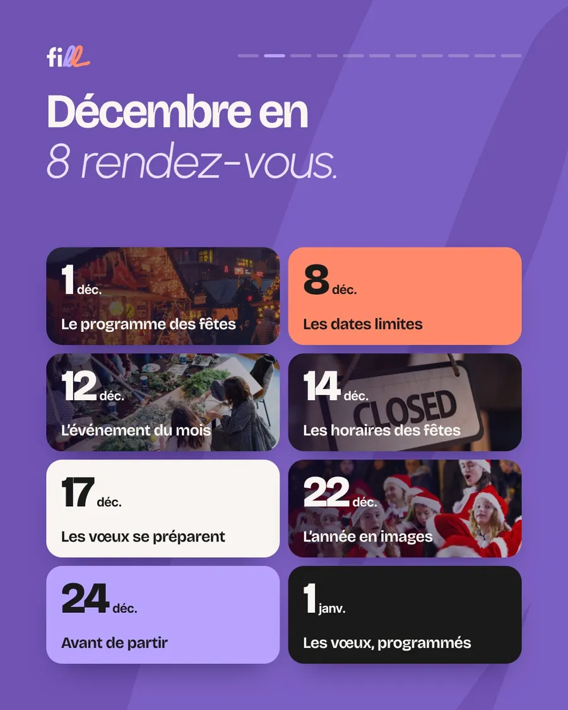
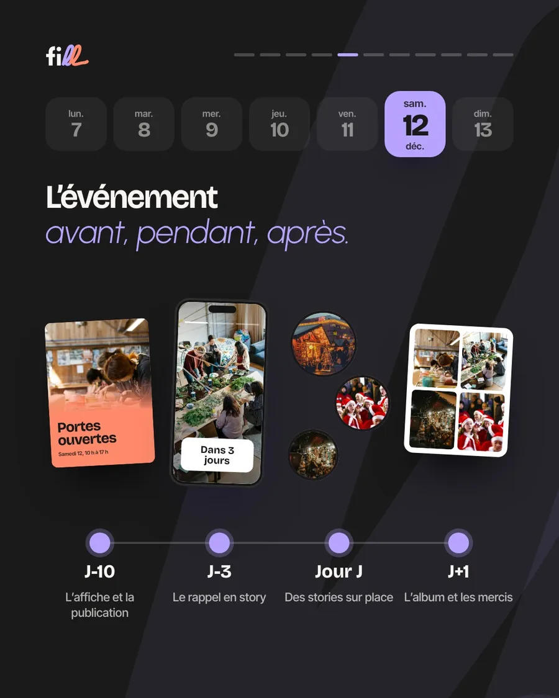
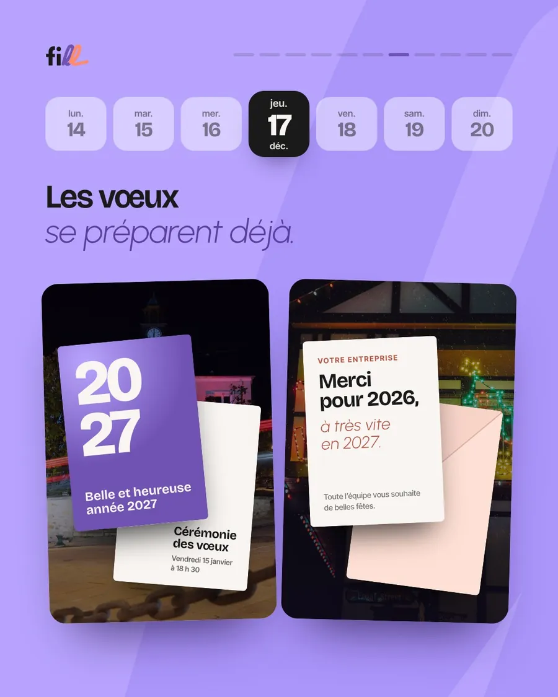

Décembre est le mois le plus dense de l’année pour la communication, et le plus court : les deux dernières semaines, une bonne partie des équipes est en congés. Programme des fêtes, dates limites, horaires d’ouverture, vœux, bilan de l’année : voici les huit rendez-vous à prévoir, dans l’ordre où ils arrivent, pour une collectivité comme pour une entreprise.
Pourquoi décembre se prépare en novembre
En décembre, presque tout ce qu’il faut publier est connu à l’avance. Le marché de Noël, les horaires des fêtes, la cérémonie des vœux, la fermeture de fin d’année : rien de tout cela n’est une surprise. Ce qui rend le mois difficile, c’est que ces informations arrivent toutes en même temps, au moment où les équipes s’allègent.
La conséquence est connue : on publie dans l’urgence, les horaires des fêtes sortent le 23, et les vœux se préparent pendant les congés. Un calendrier posé fin novembre suffit à l’éviter. Il tient en huit dates.

1. Début décembre : annoncer le programme des fêtes
Le premier rendez-vous est aussi le plus attendu. Pour une commune, c’est le programme : marché de Noël, illuminations, spectacle des écoles, repas ou colis des aînés. Pour une entreprise, ce sont les horaires élargis, les idées cadeaux, les dates de commande.
L’erreur fréquente consiste à publier ces informations au compte-gouttes, au fil des confirmations. Mieux vaut un seul support de référence (une page du site ou une actualité) qui rassemble tout le mois, puis des publications qui y renvoient. Chaque nouvelle information complète cette page au lieu de créer un message isolé.
- Une page ou une actualité « Décembre » sur le site, mise à jour au fil du mois.
- Une publication d’annonce sur les réseaux, avec une image qui parle du sujet.
- Un affichage dans les lieux de passage (mairie, commerce, accueil).
2. Deuxième semaine : rappeler les dates limites
Décembre est le mois des inscriptions qui se ferment : colis des aînés, repas de fin d’année, commandes avant Noël, dernier jour de livraison garantie. Ces dates méritent un rappel à part, quelques jours avant l’échéance.
Une story ou une publication courte suffit, à condition que la date soit lisible en une seconde et qu’elle figure aussi dans le texte (pas seulement dans l’image). Un rappel trois jours avant, puis un dernier la veille, couvrent la plupart des retardataires sans lasser ceux qui ont déjà répondu.
3. Mi-décembre : l’événement du mois, avant, pendant, après
Chaque structure a son temps fort de décembre : un marché, des portes ouvertes, un spectacle, une soirée clients. Il se communique en quatre temps, et c’est souvent le troisième ou le quatrième qui manque.
| Moment | Ce qu’on publie |
|---|---|
| Dix jours avant | L’affiche et la publication d’annonce |
| Trois jours avant | Un rappel, en story ou en publication |
| Le jour même | Quelques stories sur place |
| Le lendemain | L’album photo et les remerciements |
La publication du lendemain est celle qui touche le plus de monde : ceux qui étaient là s’y reconnaissent et la partagent. Elle demande seulement de prévoir quelqu’un pour prendre des photos pendant l’événement, et de les récupérer le soir même.

4. Mi-décembre : annoncer les horaires des fêtes
Les horaires de fin d’année sont l’information la plus recherchée du mois, et la plus souvent contradictoire. Le site indique les horaires habituels, la fiche Google ceux de l’an dernier, la porte d’entrée une affichette manuscrite.
La règle est simple : les horaires des fêtes se publient une fois, au même moment, partout. Le site, la fiche d’établissement Google, la page Facebook, l’affichage sur place et le message du répondeur. Une liste de ces emplacements, gardée d’une année sur l’autre, évite d’en oublier un.
5. Avant les congés : préparer les vœux
Les vœux ne se préparent pas en janvier. Dans une commune, la cérémonie suppose une invitation envoyée trois à quatre semaines avant, une annonce sur le site, un diaporama de l’année, un discours mis en page. Dans une entreprise, la carte de vœux et le message aux clients partent dans les premiers jours de janvier, donc se préparent en décembre.
Le temps le plus long n’est pas la mise en page : c’est de rassembler le contenu (les photos de l’année, les chiffres, les dates confirmées). D’où l’intérêt de commencer avant les congés, quand les collègues sont encore là pour répondre.

6. Avant Noël : raconter l’année en images
Un carrousel « l’année en images » fait partie des publications les plus vues de décembre. Il remercie ceux qui ont fait vivre la commune ou l’entreprise, et il donne une raison de revenir sur le compte.
Il se prépare en une heure si les photos de l’année sont rangées au même endroit. Sinon, il faut les chercher dans plusieurs téléphones et plusieurs boîtes mail. C’est un bon prétexte pour créer, dès janvier, un dossier partagé « année en cours » alimenté au fil des mois.
7. Avant de partir : programmer la période des fêtes
Entre le 24 décembre et la reprise, les comptes se taisent souvent pendant dix jours. Ce n’est pas un drame, mais quelques messages suffisent à garder le lien : un message de fêtes, un rappel des horaires, les vœux le 1er janvier, l’agenda de janvier.
Ces publications se programment avant de partir, directement dans les outils de Meta (Facebook et Instagram), de LinkedIn ou du site. Il reste à désigner une personne qui jette un œil aux messages reçus pendant cette période, au moins pour les urgences.
8. Le 1er janvier : les vœux, déjà programmés
Le dernier rendez-vous n’en est pas un : si les vœux ont été préparés et programmés en décembre, ils partent seuls le 1er janvier au matin. C’est le résultat le plus visible d’un mois préparé à l’avance.
La liste à garder sous la main
- Une page ou une actualité qui rassemble tout le programme de décembre.
- Les dates limites de chaque inscription, avec un rappel trois jours avant.
- L’événement du mois communiqué avant, pendant et après.
- Les horaires des fêtes publiés le même jour sur le site, la fiche Google, les réseaux et sur place.
- Les vœux préparés avant les congés : invitation, carte, message.
- Un carrousel de l’année en images.
- Les publications de la période des fêtes programmées avant de partir.
- Une personne désignée pour suivre les messages pendant les congés.